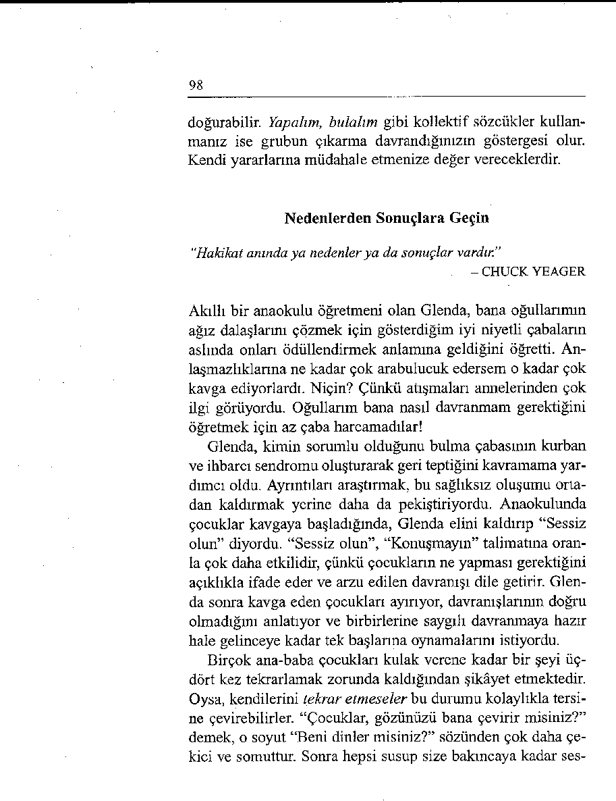
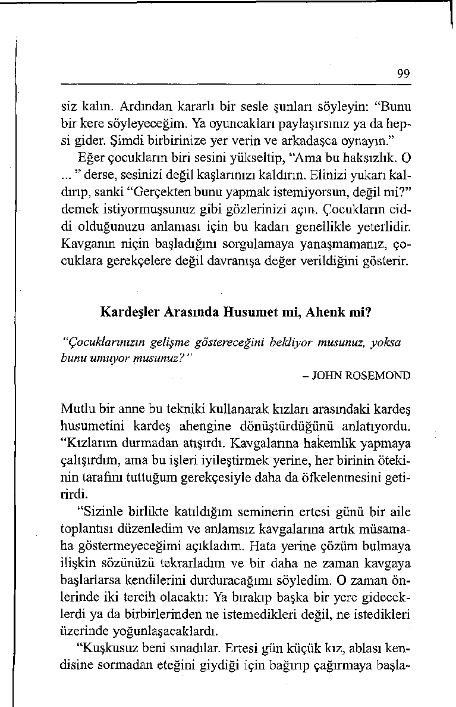
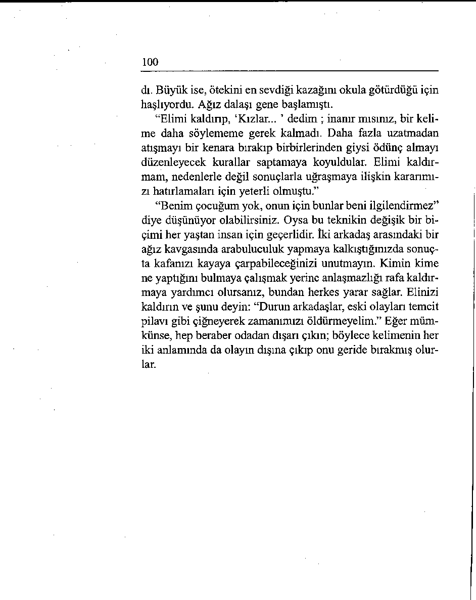

“Sorunları yerdeki delikler gibi görün. Kazıp derinleştirebileceği-
niz gibi üzerine toprak atıp kapatabilirsiniz de.”
- ANONİM
Bugünden böyle münakaşa etmenin yapıcı bir değer taşımadı ğını görün. Eğer kendinizi bir söz kavgası içinde bulursanız,
elinizi kaldırın (parmaklarınız yukarı, avuç içiniz karşıya bakar şekilde) ve “Gelin, böyle yapmayalım” cümlesiyle gelişmeyi durdurun.
Eli kaldırmak niçin? Çünkü bu dikkat çekmenin en etkili
yoludur. Herkes aynı anda konuşuyorsa kimse aklın sesini
duymaz. Trafik polisi gibi elinizi kaldırmak, durmak ve vazgeçmek için evrensel olarak anlaşılır bir işarettir. Spor dünyasında kuralsız davranışı durdurmak için düdük çalınır. Koçların ya da takım kaptanlarının mola almak için elleriyle yaptıkları T işareti de hareketi durdurmanın bir başka biçimidir.
Çözümler üzerinde odaklanarak grubu daha yüksek bir düzeye çıkarmaya çalışın. “Bütün öğleden sonramızı bu işin ni çin tamamlanmamış olduğunu tartışarak geçirebiliriz, ama bunun bütçe raporlarının zamanında elimizde olmasına hiçbir bir faydası olmaz. Bunun yerine bugün raporları nasıl tamamlayabileceğimiz üzerinde yoğunlaşalım.”
Bir belediye meclisi üyesi şöyle dedi: “Genel olarak buna
katılıyorum, ama sorumlunun adını koymanın zorunlu olduğu
durumlar da yok mudur? Kentimiz geçenlerde utanç verici bir
mali skandal yaşadı. Fonların zimmete geçirilmesinden kimin
sorumlu olduğunu belirlemezsek, hepimiz okkanın altına gideriz.
Bu kamu görevlisi önemli bir noktaya parmak basmıştı.
Bazı kamu görevlerinde, aleyhinize dava açılmasına olanak
vermemek için dolaylı olarak suçlu duruma düşmemeye dikkat etmeniz gerekir. Böyle bir duruma düşerseniz, mecburen
96
söz almak zorunda kaldığınızı ve bunun sizin olağan tarzınız
olmadığını belirtmeyi ihmal etmeyin. Şöyle diyebilirsiniz:
“Bunu yapmak zorunda kalmış olmayı hiç istemezdim, böyle
davranmaktan hiç hoşlanmam. Ama bu talihsiz koşullar, eylemlerinin hesabını vermesi için bütün bu yasadışı işlerden kimin sorumlu olduğunu belirlememizi gerektiriyor. Daha sonra saygınlığımızı geri kazanabilmemiz için, bunun bir daha tekrarlanmamasını önleyecek ne gibi önlemler alabileceğimizi tartışmayı öneriyorum.”
Geçmişi Cezalandırmak mı, Ondan Kâr Sağlamak mı?
“Bilgeliğin zirvesi bugünde yaşamak, geleceği planlamak ve geçmişten kâr sağlamaktır.”
- ANONİM
Münakaşa etmek boşa zaman harcamaktır, çünkü geçmişi de ğiştiremezsiniz. Geçmişten sadece ders alınabilir. Bugünden
sonra, insanlar ağız dalaşma başladığında hemen elinizi kaldırıp, “Bunun bir faydası yok” deyin. Kavgaya yol açmadan husumeti durdurun. Sözle yumruklaşmanın bir amaca hizmet etmediğini, ilk baştaki hedefe ulaşmanın yollan üzerinde odaklanmanın zamanı çok daha iyi kullanmak anlamına geleceğini belirtin. Grubun zihinsel çerçevesini “Kim yaptı?” sorusundan “Bu konuda ne yapabiliriz?” sorusuna kaydırmaya çalışın.
Eski bir katılımcı bu fikri çok iyi bir şekilde uyguladığını
yazdı. Bahar tatilinden sonra ailesiyle birlikte eve döndüklerinde burunlarına korkunç bir koku çarpmış. Sonunda kokunun kaynağını mutfakta bulmuşlar. Tatile çıkarken birisi buzdolabının kapısını sonuna kadar açık bırakmış ve içindeki her şey kokmuş.
Eşinin, “Buzdolabını en son kim açmıştı?” diye sormasıyla
karşılıklı ithamlar başlamış. “Yolda yemek üzere sandviçleri
97
sen hazırlamıştın.” “Bu daha önceydi, kapıdan çıkarken maden suyu almak üzere geri dönen sen değil miydin?” “Hayır, evden en son çıkan ben değildim.” Herkes birisini suçlu taraf olmakla itham ediyormuş.
“Sonunda” diyor bu arkadaşımız, “Sizin geçmişi geçmişte
bırakma teknikinizi hatırladım. Elimi kaldırıp bağırdım: ‘Bunun bir yararı yok. Kapıyı kimin açık bırakmış olduğunu sabaha kadar tartışabiliriz, ama bunun mutfağın temiz hale gelmesine hiçbir yararı olmaz. Bunun yerine gelin elbirliğiyle bu pisliği ortadan kaldıralım. Daha sonra bir daha seyahate çıkarken her şeyin kapalı olup olmadığını kontrol etmemizi sağlayacak bir sistem geliştirmeye çalışırız.’ ”
Sözel Trafik Polisi İşlevini Üstlenin
"Bir münakaşadan kazançlı çıkmanın tek yolu ona hiç girişmemektir.”
- DALE CARNEGIE
Münakaşaların nasıl önlenebileceği konusuna bir katılımcı şu
katkıyı yaptı: “Sanki sözel trafik polisleri gibi işlev görmemiz
gerekiyor. Eğer insanlar bir iletişim çarpışmasına doğru gidiyorsa birbirlerine toslayıp, bir hitabet enkazına dönüşmeden önce onları durdurmamız gerekir.”
Bu doğrudur. Bir tartışma ateşli bir münakaşaya dönüştü ğünde taraflar birbirlerini kırmaya yönelir. Siz masum bir izleyici olabilirsiniz, ama çarpışmayı önlemeniz herkese yarar sağlayacaktır.
Bunu düzgün bir şekilde - kimseyi suçlamadan - yapmanın
yolu biz sözcüğünü kullanmaktır. Siz sözcüğünü kullanmanız
(“Çocuklar bu işi durdurun” ya da “Sorumluluğu birbirinizin
üstüne atmaya son verin.”) söz konusu kişi ya da kişileri arkadaşlarının gözünde küçük düşürebilir ve sizin kendini beğenmiş olduğunuz, kendinizi onlardan ayırdığınız gibi bir izlenim 
98
doğurabilir. Yapalım, bulalım gibi kollektif sözcükler kullanmanız ise grubun çıkarma davrandığınızın göstergesi olur.
Kendi yararlarına müdahale etmenize değer vereceklerdir.
Nedenlerden Sonuçlara Geçin
“Hakikat anında ya nedenler ya da sonuçlar vardır.”
- CHUCK YEAGER
Akıllı bir anaokulu öğretmeni olan Glenda, bana oğullarımın
ağız dalaşlarını çözmek için gösterdiğim iyi niyetli çabaların
aslında onları ödüllendirmek anlamına geldiğini öğretti. Anlaşmazlıklarına ne kadar çok arabulucuk edersem o kadar çok kavga ediyorlardı. Niçin? Çünkü atışmaları annelerinden çok ilgi görüyordu. Oğullarım bana nasıl davranmam gerektiğini
öğretmek için az çaba harcamadılar!
Glenda, kimin sorumlu olduğunu bulma çabasının kurban
ve ihbarcı sendromu oluşturarak geri teptiğini kavramama yardımcı oldu. Ayrıntıları araştırmak, bu sağlıksız oluşumu ortadan kaldırmak yerine daha da pekiştiriyordu. Anaokulunda çocuklar kavgaya başladığında, Glenda elini kaldırıp “Sessiz olun” diyordu. “Sessiz olun”, “Konuşmayın” talimatına oranla çok daha etkilidir, çünkü çocukların ne yapması gerektiğini açıklıkla ifade eder ve arzu edilen davranışı dile getirir. Glenda sonra kavga eden çocukları ayırıyor, davranışlarının doğru olmadığını anlatıyor ve birbirlerine saygılı davranmaya hazır hale gelinceye kadar tek başlarına oynamalarını istiyordu.
Birçok ana-baba çocukları kulak verene kadar bir şeyi üç-
dört kez tekrarlamak zorunda kaldığından şikâyet etmektedir.
Oysa, kendilerini tekrar etmeseler bu durumu kolaylıkla tersine çevirebilirler. “Çocuklar, gözünüzü bana çevirir misiniz?”
demek, o soyut “Beni dinler misiniz?” sözünden çok daha çekici ve somuttur. Sonra hepsi susup size bakmcaya kadar ses 
99
siz kaim. Ardından kararlı bir sesle şunları söyleyin: “Bunu
bir kere söyleyeceğim. Ya oyuncakları paylaşırsınız ya da hepsi gider. Şimdi birbirinize yer verin ve arkadaşça oynayın.”
Eğer çocukların biri sesini yükseltip, “Ama bu haksızlık. O
...” derse, sesinizi değil kaşlarınızı kaldırın. Elinizi yukarı kaldırıp, sanki “Gerçekten bunu yapmak istemiyorsun, değil mi?”
demek istiyormuşsunuz gibi gözlerinizi açın. Çocukların ciddi olduğunuzu anlaması için bu kadarı genellikle yeterlidir.
Kavganın niçin başladığını sorgulamaya yanaşmamanız, çocuklara gerekçelere değil davranışa değer verildiğini gösterir.
Kardeşler Arasında Husumet mi, Ahenk mi?
“Çocuklarınızın gelişme göstereceğini bekliyor musunuz, yoksa
bunu umuyor musunuz? ”
- JOHN ROSEMOND
Mutlu bir anne bu tekniki kullanarak kızları arasındaki kardeş
husumetini kardeş ahengine dönüştürdüğünü anlatıyordu.
“Kızlarım durmadan atışırdı. Kavgalarına hakemlik yapmaya
çalışırdım, ama bu işleri iyileştirmek yerine, her birinin ötekinin tarafım tuttuğum gerekçesiyle daha da öfkelenmesini getirirdi.
“Sizinle birlikte katıldığım seminerin ertesi günü bir aile
toplantısı düzenledim ve anlamsız kavgalarına artık müsamaha göstermeyeceğimi açıkladım. Hata yerine çözüm bulmaya ilişkin sözünüzü tekrarladım ve bir daha ne zaman kavgaya başlarlarsa kendilerini durduracağımı söyledim. O zaman önlerinde iki tercih olacaktı: Ya bırakıp başka bir yere gideceklerdi ya da birbirlerinden ne istemedikleri değil, ne istedikleri üzerinde yoğunlaşacaklardı.
“Kuşkusuz beni sınadılar. Ertesi gün küçük kız, ablası kendisine sormadan eteğini giydiği için bağırıp çağırmaya başla 
100
dı. Büyük ise, ötekini en sevdiği kazağını okula götürdüğü için
haşlıyordu. Ağız dalaşı gene başlamıştı.
“Elimi kaldırıp, ‘Kızlar... ’ dedim ; inanır mısınız, bir kelime daha söylememe gerek kalmadı. Daha fazla uzatmadan atışmayı bir kenara bırakıp birbirlerinden giysi ödünç almayı düzenleyecek kurallar saptamaya koyuldular. Elimi kaldırmam, nedenlerle değil sonuçlarla uğraşmaya ilişkin kararımızı hatırlamaları için yeterli olmuştu.”
“Benim çocuğum yok, onun için bunlar beni ilgilendirmez”
diye düşünüyor olabilirsiniz. Oysa bu teknikin değişik bir bi çimi her yaştan insan için geçerlidir. İki arkadaş arasındaki bir
ağız kavgasında arabuluculuk yapmaya kalkıştığınızda sonuçta kafanızı kayaya çarpabileceğinizi unutmayın. Kimin kime ne yaptığını bulmaya çalışmak yerine anlaşmazlığı rafa kaldırmaya yardımcı olursanız, bundan herkes yarar sağlar. Elinizi kaldırın ve şunu deyin: “Durun arkadaşlar, eski olayları temcit pilavı gibi çiğneyerek zamanımızı öldürmeyelim.” Eğer mümkünse, hep beraber odadan dışarı çıkın; böylece kelimenin her iki anlamında da olayın dışına çıkıp onu geride bırakmış olurlar.
101
HATA DEĞİL ÇÖZÜM BULMAK İÇİN EYLEM PLANI
Süpermarkette alışveriş yapıyorsunuz. Arabanızdaki mallan kasada
boşaltıyorsunuz, görevli kişi gerekli işlemi yaptıktan sonra kredi
kartınıza provizyon verilmediğini söylüyor. Yanınızda çek ya da nakit para da yok. Aldığınız her şeyi raflara geri koymak zorunda kalıyorsunuz. Söz verdiği halde ödemeyi yapmamış ve sizi bu utanç verici duruma düşürmüş olan eşinize kızıyorsunuz. Ne yaparsınız?
UNUTMANIZ GEREKEN